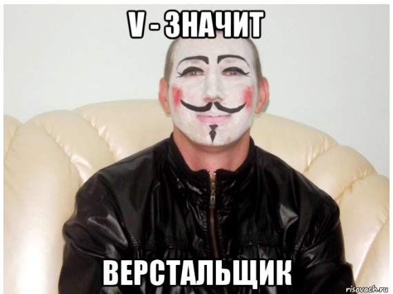

В этом уроке вы научитесь создавать списки.

В HTML списки создаются с помощью специальных тегов. Существует три основных типа списков:
<ul> (unordered list), а каждый элемент списка обозначается
тегом <li> (list item).
<ul> <li> Элемент списка 1 </li> <li> Элемент списка 2 </li> <li> Элемент списка 3 </li> </ul> <ol> (ordered list), а каждый элемент списка обозначается
тегом <li>
<ol> <li> Элемент списка 1 </li> <li> Элемент списка 2 </li> <li> Элемент списка 3 </li> </ol> <dl> (definition list). Каждый термин обозначается тегом
<dt> (definition term), а его описание — тегом <dd> (definition
description).
<dl> <dt> HTML </dt> <dd> Язык разметки веб-страниц </dd> <dt> CSS </dt> <dd> Язык стилей веб-страниц </dd></dl> type="a" — для маркированного списка.type="1" — для нумерованного списка.type="A" — для списка определений.start="n" — для нумерованного списка, где n — начальное значение.value="n" — для списка определений, где n — начальное значение.<ol type="A" start="3"><li> Третий элемент </li><li> Четвертый элемент </li></ol>
Пример с CSS:
<ul style="list-style-type: square;"><li> Элемент с квадратным маркером</li><li> Еще один элемент</li></ul>
Таким образом, списки в HTML позволяют структурировать информацию и делать её более читаемой.